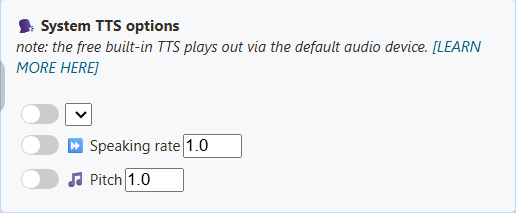
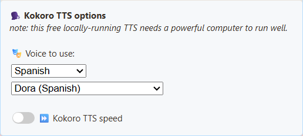
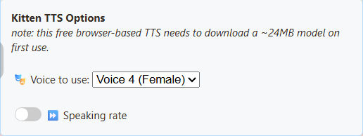
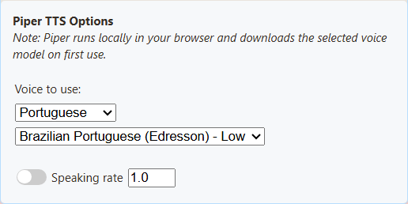
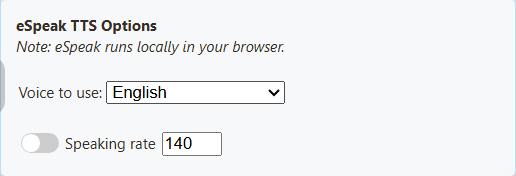
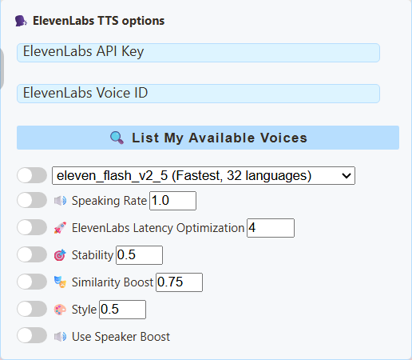
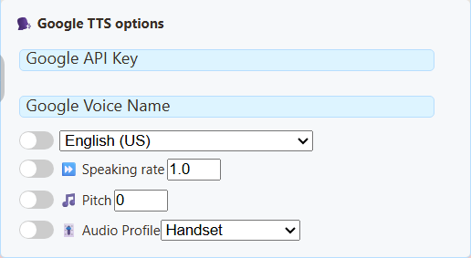
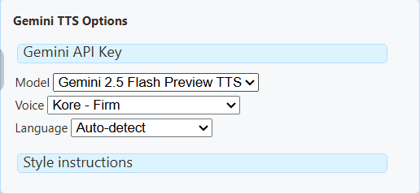
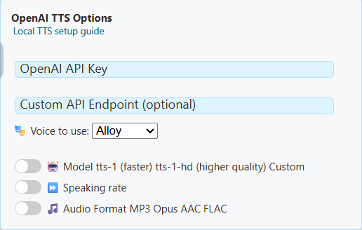

1. Switch on chat reading
Open the SSN extension popup or the desktop app’s Sources and Settings.
Under Main chat overlay & control dock, expand Message — Text to Speech. Turn on the switch shown here:

2. Choose a free voice
In the same section, scroll to TTS Service Provider. Choose Piper TTS, then a voice.

Use copy link beside Main chat overlay & control dock to get your updated link.
3. Play it in OBS
- Add an OBS Browser Source and paste that link.
- Enable Control audio via OBS in its properties.
- Send a chat message. Check the source’s audio meter, then make a short recording.
Want to hear it yourself? In OBS Advanced Audio Properties, choose Monitor and Output for that source. Keep only one copy reading chat.
Listen to the free voices
Prefer another sound? These four voices are free. Press play to compare.
Sample words and test details
Each voice reads: Welcome to the stream! Thanks for joining us. Which game should we play next? Name reading is disabled.
Checked September 7, 2026 in OBS 32.2.2 on Windows 11: a chat message reached the real dock, generated speech, moved the Browser Source meter and appeared in a recording. Kokoro took noticeably longer to start speaking in this CPU test. These clips preview the voice, not the waiting time.
System TTS exposed five voices on this machine but produced no audio in the Browser Source recording. That result is specific to this setup; always test your final URL and recording. Cloud voices are not included because no paid credentials were used.
Need help?
Does my chat platform support TTS?
If SSN receives the chat as text, it can read it aloud. YouTube, Twitch, TikTok and other sources use the same feature. Your chat platform does not need its own TTS support.
No speech?
Check that the dock receives chat, then check the TTS switch, provider and filters. Use the newly copied link. Allow the first model download to finish.
Works in Chrome/Edge, but not OBS?
OBS has a separate browser and voice list. System TTS may not work there, even when it lists voices. Try Piper, Kokoro, Kitten or eSpeak. A virtual audio cable cannot fix missing speech.
The meter moves, but the recording is silent?
Check mute and recording-track assignments in OBS. Use Monitor and Output if you also want to hear it; avoid capturing that monitoring output a second time. OBS audio guide.
Can I use an OBS dock or Featured Chat instead?
An OBS Custom Browser Dock is a control panel, not the scene Browser Source used above. For Featured Chat, enable TTS in that overlay’s own popup options and copy its link. Keep one page speaking to avoid doubled voices.
Compare all providers: requirements, cost and trade-offs
Start with Piper for a free local voice, or compare Kokoro if you prefer its sound. Try eSpeak when responsiveness matters more than realism. Kitten is another compact English option. Listen before deciding.
| Provider | Good for | Trade-off | Requirements / cost |
|---|---|---|---|
| Kokoro | Natural English voices; US/UK choices. | More CPU work; first speech can be slow. | Free, no key. Downloads model/voice assets; CPU or supported WebGPU. |
| Piper | Local neural voices; English, Spanish and Portuguese options. | Quality and pronunciation vary by voice. | Free, no key. Downloads the selected model (HFC medium: about 63 MB), plus engine files. |
| Kitten | Compact English model, eight voice choices. | Fewer languages and voice styles. | Free, no key. Current bundled model: about 24 MB, plus engine/voice files; CPU. |
| eSpeak | Lightweight, many languages, quick to start. | Deliberately synthetic/robotic sound. | Free, no key. Loads packaged engine/language files; no neural model or GPU needed. |
| System TTS | Uses voices exposed by your browser or desktop app. | Voice list and OBS capture vary; some voices need internet. | No SSN provider fee. Requires a working system/browser voice; test on the actual playback page. |
| ElevenLabs | Voice IDs, model selection and stability/style controls. | Account limits, network delay and API charges can apply. | Internet, API key and accessible voice ID. Chat text goes to the provider. |
| Google Cloud | Named voices and language, rate and pitch controls. | Not every voice supports every control. | Internet, enabled Cloud TTS API, API key and matching voice/language. Billing/quota applies. |
| Gemini | Voice styles and written delivery instructions. | Preview models and quotas can change; latency varies. | Internet, Gemini API key and access to the selected TTS model. Check account limits/billing. |
| Speechify | Voice ID with speed, language and model controls. | Needs API access; available voices depend on account. | Internet and Speechify API key. API usage terms/limits apply. |
| OpenAI | Named voices with model and format controls. | API billing and internet required; account subscription is separate. | API key with TTS access. Chat text is sent to the configured endpoint. |
| Custom / Local | Use your own compatible voice server. | Most setup: endpoint, model, voice and browser access must agree. | A reachable OpenAI-compatible speech endpoint; key if required. Local hardware or hosting costs vary. |
Download sizes above are model files, not total memory use or all required assets. Local providers use the computer running the dock/overlay; first use can be slower, and OBS has its own cache. Cloud providers save local computation but send the text off-device.
OBS: the four local providers below passed Browser Source recording tests. Cloud/custom providers return audio for the page to play, but were not tested with live accounts in this review. System TTS needs a separate test even when it lists voices.
Provider settings and voice names
Actual desktop-app settings, captured with a fresh profile. Open the provider you want; the API-key fields are intentionally empty. These controls configure the selected SSN dock or overlay. Select a screenshot to see it at full size.
System TTS
The language list is empty in this fresh profile. Available voices depend on the browser/app and installed voices; there is no universal SSN voice list.

Kokoro
Choose a voice in SSN; the model loads on the page that speaks. The built-in selection is English US/UK.

Voice names and URL values
- Heart (American Female) —
af_heart - Alloy (American Female) —
af_alloy - Aoede (American Female) —
af_aoede - Bella (American Female) —
af_bella - Jessica (American Female) —
af_jessica - Kore (American Female) —
af_kore - Nicole (American Female) —
af_nicole - Nova (American Female) —
af_nova - River (American Female) —
af_river - Sarah (American Female) —
af_sarah - Sky (American Female) —
af_sky - Adam (American Male) —
am_adam - Echo (American Male) —
am_echo - Eric (American Male) —
am_eric - Fenrir (American Male) —
am_fenrir - Liam (American Male) —
am_liam - Michael (American Male) —
am_michael - Onyx (American Male) —
am_onyx - Puck (American Male) —
am_puck - Santa (American Male) —
am_santa - Emma (British Female) —
bf_emma - Isabella (British Female) —
bf_isabella - George (British Male) —
bm_george - Lewis (British Male) —
bm_lewis - Alice (British Female) —
bf_alice - Lily (British Female) —
bf_lily - Daniel (British Male) —
bm_daniel - Fable (British Male) —
bm_fable
Kitten
Eight English voices: male and female variants numbered 2, 3, 4 and 5. The sample uses Voice 4 (Female).

Voice names and URL values
- Voice 2 (Male) —
expr-voice-2-m - Voice 2 (Female) —
expr-voice-2-f - Voice 3 (Male) —
expr-voice-3-m - Voice 3 (Female) —
expr-voice-3-f - Voice 4 (Male) —
expr-voice-4-m - Voice 4 (Female) —
expr-voice-4-f - Voice 5 (Male) —
expr-voice-5-m - Voice 5 (Female) —
expr-voice-5-f
Piper
Choose a matching language and model. The sample uses HFC medium. A language setting alone does not translate a voice.

Voice names and URL values
- English US Female (HFC) - Medium —
en_US-hfc_female-medium - Spanish Spain (DaveFX) - Medium —
es_ES-davefx-medium - Spanish Mexico (Ald) - Medium —
es_MX-ald-medium - Brazilian Portuguese (Faber) - Medium —
pt_BR-faber-medium - Brazilian Portuguese (Edresson) - Low —
pt_BR-edresson-low - Portuguese Portugal (Tugao) - Medium —
pt_PT-tugão-medium
eSpeak
Choose a language voice and optionally adjust speaking rate. This engine sounds robotic by design.

Voice names and URL values
- English —
en - Spanish —
es - Portuguese Brazil —
pt-br - Portuguese Portugal —
pt-pt
ElevenLabs
Enter your API key, then use List My Available Voices to find a voice ID your account can use. Provider reference.

Google Cloud
Enter a Google Cloud TTS API key and exact voice name, with its matching language. Voice names and supported controls.

Gemini
Select a supported TTS model and voice; style instructions change delivery. These are Gemini API settings, separate from Google Cloud TTS. Voice examples and requirements.


{kind=link}
{kind=link}
{kind=link}
{kind=link}
{kind=link}
{kind=link}
{kind=link}
{kind=link}
OpenAI
Choose a supported voice/model and enter an API key. A ChatGPT subscription does not supply API credits. Keep the default endpoint for OpenAI.
{kind=link}

Custom / Local TTS
This option reuses the OpenAI-compatible controls, so the heading still says OpenAI. Enter your server endpoint and its supported voice/model; authentication depends on your server. See the local server guide.

Advanced: edit a TTS URL manually
Good first tests:
dock.html?session=YOUR_SESSION&speech=en-US&ttsprovider=kokoro
dock.html?session=YOUR_SESSION&speech=en-US&ttsprovider=piper
dock.html?session=YOUR_SESSION&speech=en-US&ttsprovider=kitten
For Portuguese or Spanish, start with one of these instead:
dock.html?session=YOUR_SESSION&speech=pt-BR&ttsprovider=piper&pipervoice=pt_BR-faber-medium
dock.html?session=YOUR_SESSION&speech=pt-BR&ttsprovider=espeak&espeakvoice=pt-br
dock.html?session=YOUR_SESSION&speech=es-ES&ttsprovider=piper&pipervoice=es_ES-davefx-medium
dock.html?session=YOUR_SESSION&speech=es-ES&ttsprovider=espeak&espeakvoice=es
Advanced: run your own local TTS server
A local TTS server is useful when you want private voices, a specific voice model, or a server such as Kokoro-FastAPI or openedai-speech. The page that plays TTS must be able to reach the endpoint.

dock.html?session=YOUR_SESSION&speech=en-US&ttsprovider=customtts&openaiendpoint=http://127.0.0.1:8124/v1/audio/speech&voiceopenai=af_bella
localhost means the computer running the page. If your TTS server is on another computer, use that computer's LAN IP or run the bridge on the OBS computer.